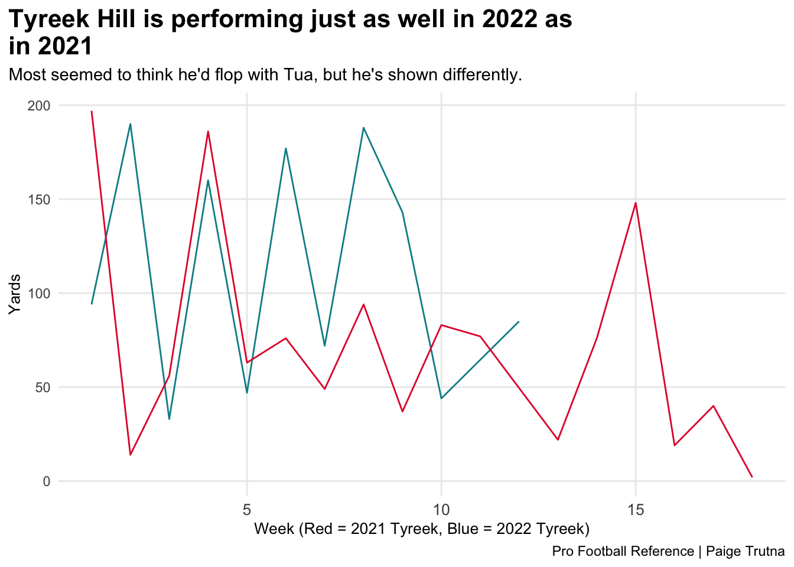
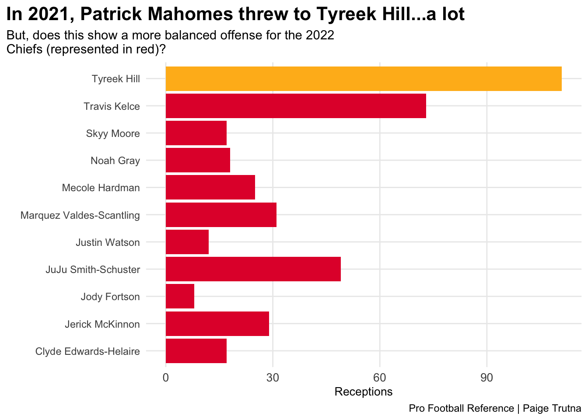

Did Patrick Mahomes and Tyreek Hill rely on each other? Or are they doing just fine without each other?
football
nfl
patrickmahomes
tyreekhill
chiefs
Author
Paige Trutna
Published
November 30, 2022
When it was announced that Tyreek Hill was leaving the Chiefs, I was sitting in a creative nonfiction writing class. I got the notification on my Apple Watch and my mouth actually dropped. In the middle of class. Patrick Mahomes is an incredible quarterback. But, after Tyreek Hill left, the question was, will he still be as incredible? Or will he drop down a level? The other question was one of Tyreek Hill’s quality on the Dolphins. Would he perform as well with Tua Tagovailoa as he did with Mahomes? Well, Mahomes is having his best year yet. And Hill? He’s on track to break the NFL’s single-season receiving yards record, and has recorded 1,233 total yards so far. So, seems like Mahomes and Hill are doing just fine without each other. The Chiefs, headed by Mahomes, are 9-2 and first in the AFC. The Dolphins are 8-3 and lead the AFC East. The chart below shows Tyreek Hill’s receiving yards with Patrick Mahomes as his quarterback vs. his receiving yards with the Dolphins.
*Data for this project was collected as of Nov. 30, 2022.
Code
library(tidyverse)library(gt)offense21 <-read_csv("offense21.csv")offense22 <-read_csv("offense22.csv")receiving21 <-read_csv("receiving21.csv")receiving22 <-read_csv("receiving22.csv")passing21 <-read_csv("passing21.csv")passing22 <-read_csv("passing22.csv")mahomes <-read_csv("mahomes.csv")hillgames21 <-read_csv("hillgames21.csv")hillgames22 <-read_csv("hillgames22.csv")hill21 <- receiving21 %>%filter(Player =="Tyreek Hill*")hill22 <- receiving22 %>%filter(Player =="Tyreek Hill")chiefsreceivers <- receiving22 %>%filter(Tm =="KAN", Yds >100)hill21cleaned <- hill21 %>%mutate(Player=gsub("\\*","",Player))ggplot() +geom_line(data=hillgames22, aes(x=Week, y=Yds), color="#008E97") +geom_line(data=hillgames21, aes(x=Week, y=Yds), color="#E31837") +labs(title ="Tyreek Hill is performing just as well in 2022 as \nin 2021",subtitle ="Most seemed to think he'd flop with Tua, but he's shown differently.",x ="Week (Red = 2021 Tyreek, Blue = 2022 Tyreek)",y ="Yards",caption ="Pro Football Reference | Paige Trutna" ) +theme_minimal() +theme(plot.title =element_text(size =16, face ="bold"),axis.title =element_text(size =10), plot.subtitle =element_text(size=11), panel.grid.minor =element_blank(),axis.text.x =element_text(size =10),plot.title.position ="plot" )

There’s Tyreek’s numbers. But what about Mahomes? He’s part of the MVP conversation, and has 326.2 yards/game this season and 29 touchdowns. His yards/game stat is the highest it’s been since his NFL career began in 2017. He’s still making the jaw-dropping plays that he did with Hill. So, Mahomes is still a great quarterback, and yes, he still does have some great weapons.
Code
mahomestable <- mahomes %>%select(Year, `Y/G`, `TD%`) %>%mutate(Year=gsub("\\*","",Year)) %>%mutate(Year=gsub("\\+","",Year))mahomestable %>%gt() %>%cols_label(Year ="Year",`Y/G`="Yards Per Game",`TD%`="Touchdown Percentage" ) %>%tab_header(title ="Has Mahomes dropped off without Hill?",subtitle ="Nope, he hasn't. In fact, this is his best year in the league in terms of yards per game (2018 was the best for TD Percentage)." ) %>%tab_style(style =cell_text(color ="black", weight ="bold", align ="left"),locations =cells_title("title") ) %>%tab_style(style =cell_text(color ="black", align ="left"),locations =cells_title("subtitle") ) %>%tab_source_note(source_note =md("By: Paige Trutna | Source: Pro Football Reference") ) %>%tab_style(locations =cells_column_labels(columns =everything()),style =list(cell_borders(sides ="bottom", weight =px(3)),cell_text(weight ="bold", size=14)) ) %>%tab_style(style =list(cell_fill(color ="#E31837"),cell_text(color ="white") ),locations =cells_body(rows = Year =="2022") ) %>%tab_style(style =list(cell_fill(color ="#FFB81C"),cell_text(color ="black") ),locations =cells_body(rows = Year =="2018") )
Has Mahomes dropped off without Hill?
Nope, he hasn't. In fact, this is his best year in the league in terms of yards per game (2018 was the best for TD Percentage).
Year
Yards Per Game
Touchdown Percentage
2017
284.0
0.0
2018
318.6
8.6
2019
287.9
5.4
2020
316.0
6.5
2021
284.6
5.6
2022
326.2
6.8
Career
304.5
6.5
By: Paige Trutna | Source: Pro Football Reference
The difference in the Chiefs’ offense between 2021 and 2022 is the receptions that each receiver gets. In 2021, Hill got the most receptions by far - and for good reason. This year, Mahomes had to make a change. And the change didn’t effect his numbers at all. Sure, he doesn’t have a go-to wide receiver the way he had Hill (he still has TE Travis Kelce, don’t worry), but the receptions for the Chiefs WRs have been more balanced.
Code
ggplot() +geom_bar(data=chiefsreceivers, aes(x=reorder(Player, Rec), weight=Rec), fill="#E31837") +geom_bar(data=hill21cleaned, aes(x=Player, weight=Rec), fill ="#FFB81C") +coord_flip() +labs(title ="In 2021, Patrick Mahomes threw to Tyreek Hill...a lot",subtitle ="But, does this show a more balanced offense for the 2022 \nChiefs (represented in red)?",x ="",y ="Receptions",caption ="Pro Football Reference | Paige Trutna" ) +theme_minimal() +theme(plot.title =element_text(size =16, face ="bold"),axis.title =element_text(size =10), plot.subtitle =element_text(size=11), panel.grid.minor =element_blank(),axis.text.x =element_text(size =10),plot.title.position ="plot" )

We’ll see what happens in the postseason this year, but both the Dolphins and the Chiefs will be there. And that’s due, in part, to the Chiefs’ star quarterback and the Dolphins’ star receiver…yes, even though they don’t play together anymore.